Graphic Generator for Generation Plants
The Graphics Generator generates dynamic graphics pages for operational plants. The pages are generated based on existing BACnet data points that are available on the Desigo building automation and control automation station and set up on standard applications.
For related procedures and workflows, see the step-by-step section.
The Graphics Generator is not only faster than traditional graphics engineering, but also provides a homogenous and correct selection of graphic objects on the project. The Graphics Generator takes over the following tasks during graphic engineering:
- Which graphics object must be selected?
- What function does the graphics object have?
- Where is the graphics object placed?
- Is the homogeneity of graphics objects guaranteed throughout the entire project?
What Exactly is Automatically Generated?
The Graphics Generator can only automatically generate objects that were defined in advance in a mapping graphic. Namely:
- All static symbols.
- Graphics objects, with an object reference based on an application name.
Objects with only an object reference are not automatically generated. This is the case if the application program does not have the function and must therefore be customized. These objects must be added manually after generation.
Does the Graphics Generator do Everything?
No. During graphics engineering, you have to consider which tools are needed for what activity. There are additional means available for graphics engineering:
- Search for a symbol in the graphics library browser and then manually enter the object reference.
- Drag-and-drop an object from the System Browser to the graphics page. The object reference is added automatically.
- Select an existing page and save it under a new name. Then change the object reference with search and replace or copy and paste.
- Create project-specific graphics pages (mapping graphic) for the Graphics Generator.
The document focuses in greater detail on individual activities, and when to use them. This ensures that the customer receives high-quality graphics pages.
What does Homogeneity Mean with Regard to Graphics Engineering?
The symbols and texts are always visible at the same positions. The graphic objects do not jump back and forth when changing graphics pages.
What is the Requirement for Graphics Engineering?
Programming using ABT Site is largely completed and Desigo building automation and control data must be imported to the Desigo CC system database.
What Happens when Programming is Changed on the Automation Station?
You must consider whether to generate the graphics page anew or simply drag-and-drop the change to an existing graphics page. For heating and cooling plants, a plant, for example, a heating group, can be generated to an empty subarea.
Graphics Generator Concept
In the Graphics Generator, you select one or more plants, designate one mapping groups for use and start the generation process. The Graphics Generator attempts to select the appropriate graphic elements based on the data point information (carrier of instance designation application name (AN) and function designation Function Name (FN)) and fills out the associated fields with the correct object reference.
Let us consider, for example, a data point used to control the fan from a ventilation plant. The Graphics Generator selects the correct symbol based on the function designation FN=Fan1St (single-stage fan). The instance designation AN=FanSu (Supply air fan) indicates that the fan symbol must be drawn in the supply air duct.
The applications used must be selected in ABT Site from the Desigo building automation and control library to achieve the best possible results. Only these libraries include the requisite information with application and function names.
Variants in Desigo
The Desigo building automation and control library offers aggregates or component with different variants. The application program is compiled based on the selected variant and then loaded to the automation station. The following information is saved to the data file if a single-stage fan was selected in Desigo.
Data File for Fans in a Ventilation Plant | ||
Position | Application name | Function name |
Supply air fan | FanSu | Fan1St |
Extract air fan | FanEx | Fan1St |
1-stage = Fan1St | 2-stage = Fan2St | VSD controlled = FanASED20 |
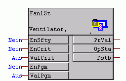 | 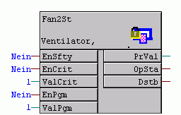 | 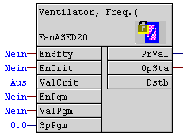 |
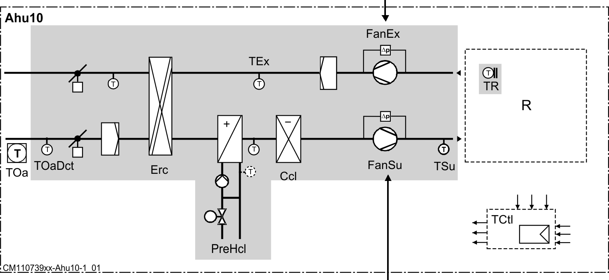 | ||
1-stage = Fan1St | 2-stage = Fan2St | VSD controlled = FanASED20 |
Variants in the Graphic
Fan 2D | Fan 2D+ | Fan 3D |
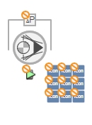 | 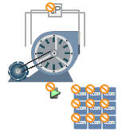 | 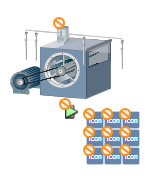 |
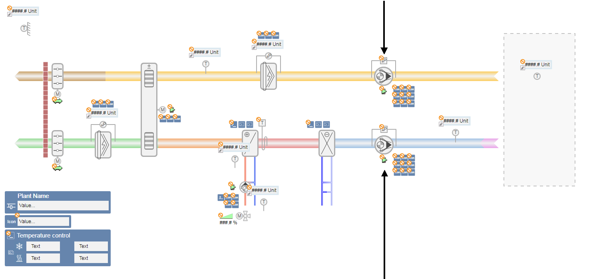 | ||
Fan 2D | Fan 2D+ | Fan 3D |
Graphics Generator Dialog Box
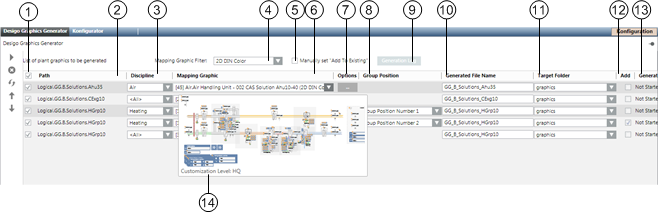
Graphics Generator | ||
| Description | |
1 | Click the check boxes to select or clear all. Only available if all plants are set to active. | |
2 | Displays the technical path of the selected plant. The tooltip displays the entire path with the associated system names. | |
3 | Displays only the mapping graphics that matches filter Discipline. The discipline filter is predefined when the plant is assigned. | |
4 | Displays on the mapping graphics that matches filter Mapping graphic filter. Retain the selected filter throughout project engineering. | |
5 | If the check box Manual set "Add To Existing is not selected, the check box Add is automatically selected when assigning the second partial plant. If the check box Manually set "Add To Existing" is selected, it must be manually assigned to an existing graphics page. | |
6 | All available mapping graphics are displayed in the selection list. You can preview the mapping graphics by moving the pointer over the selection. The mapping graphic with the best match is displayed at the top. The number in the brackets, here [75], displays the number of possible matches between the selected plant and mapping graphic. Only one mapping graphic is displayed on the selection list, even if the supplied HQ mapping graphic is modified (in the region, RC, or project). The display is hierarchical: Headquarters > Region > RC > Project. | |
7 | The hydraulic circuit of the aggregates (for example: heating coils with injection circuit) is set under Options. | |
8 | Group position (1 −7) sets the position where the partial plant is generated. The file name must be the same to position. An error is displayed with a red frame if a group position occurs multiple times. | |
9 | Includes detailed information on the generated graphics pages (or non-generated). | |
10 | Defines the file name of the graphics page to be generated. The default path [Network], [Plant hierarchy], [Plant name] is suggested. It can be changed by project as needed. | |
11 | Available graphic folders can be displayed and selected. The graphics page to be generated is saved to the selected folder. A file name must be entered to generate a graphics page. | |
12 | The plant is created in addition to an existing graphics page if the check box is selected in the column Add. The file name of an existing graphics page must be entered in this case. In other words, a plant can be generated as an addition after the fact. NOTE: This function is unavailable for ventilation plants. | |
13 | Displays the status of generation in the column Generation status. The following states are possible: | |
| The plant is selected as well as the check box for generation. | |
| Graphics page generation is in progress. Progress is displayed in the status bar. | |
| The plant is selected and the check box for generation is cleared. | |
| Graphics page generation is completed. On multiple graphics pages, the Generation report dialog box displays only after all graphics pages are generated. | |
| The graphics pages could not be successfully generated. Additional information is available in the Log file. | |
14 | Displays the level from which the preview is displayed. The preview is displayed in the sequence Headquarters > Region > RC > Project. 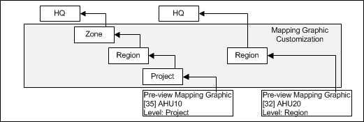 | |
Toolbar.
Graphics Generator Toolbar | |
| Description |
| All plants selected for generation are generated. NOTE: The process cannot be cancelled during generation. |
| Delete the highlighted plants from List of plant graphics for generation. |
Refresh the match index for mapping graphics. Only needed during generation or changes to mapping graphics if the Desigo Graphics Generator tab does not close in the interim. The match index is updated each time the Desigo Graphics Generator is opened. | |
| The position of a highlighted line can be moved up or down in the assignment table. |


Naming Conventions
Own libraries are installed for the Graphics Generator when installing the Desigo building automation and control extension. Mapping graphics and variant symbols are saved in their own library folders for each plant type under Project > System settings > Libraries > L1 Headquarters > BA > [Plant type]. The following guideline applies to labeling library objects.
Library Names | |
Key | Description |
MAP_XXXX | Prefix for mapping graphics in the library structure, for example: MAP_Air Handling Unit – 001 CAS Solution Ahu10-40 (2D Din Color) |
VAR_XXXX | Prefix for variant symbols in the library structure, for example: VAR_2D_Fan_None_None_All_001 |
Keywords in mapping graphic and variant symbol | |
Key | Description |
AN= | Application name (AN=PreHcl, AN=FanSu) The application name used must match the one in ABT Site and an application name may only be used once on a mapping graphic. |
AN=. | Data point source. In most cases, it is defined as plant or partial plant. |
AN=xx.zz.ww | Application name in a lower hierarchy structure |
AN=!xx | NOT the application name |
AN=xx | yy | Application name xx OR application name yy |
AN=xx,FN=yy | Application name xx AND function name yy must match. The separator can be a space, comma, or semicolon. |
FN= | Function name for subsystem Desigo building automation and control (FN=Fan1St, FN=Pu2St) The function name used must match the one from ABT Site. |
FN=!xx | NOT the function name of the Desigo building automation and control subsystem |
AN=xx | yy | Function name yy OR function name yy |
FUNCTION= | Defined function in Desigo CC |
ON= | Option name |
MAP= | Is a wildcard in the event that multiple plants/partial plants are generated on one graphics page. It is used on heating and cooling plants. 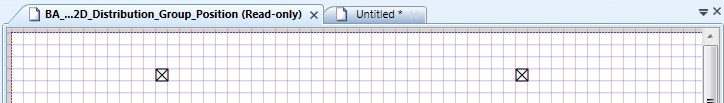 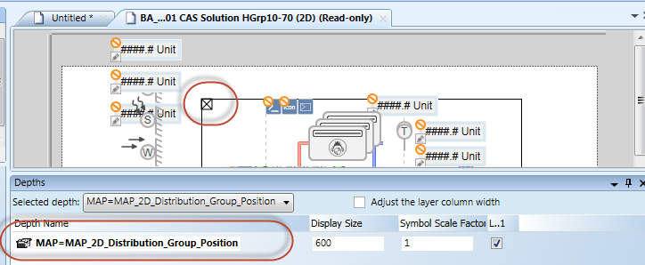 |
Mapping Graphic on a Ventilation Plant
- The System Manager is in Engineering mode.
- The mapping graphics are saved to a project level L2 – L4 for processing (see Section Modifying Mapping Graphic).
- In System Browser, select Management View.
- Select Project > System settings > Libraries > [Project level] > BA > Graphics Generator Ventilation (Desigo) > Graphic mapping pages.
- The Graphics preview opens.
- Select the mapping graphic.
- Right click and select Edit.
- The graphics editor opens for editing.
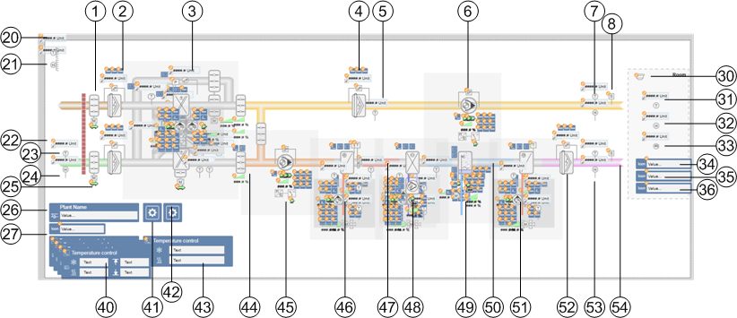
Ventilation Plant Application and Function Names | ||
| Object reference | Function |
1 | AN=DmpShofEh | Exhaust air damper |
2 | AN=FilEh FUNCTION=MonitorAirFilter | Exhaust air damper 1) |
3 | AN=Erc|ErcPl|ErcRo|ErcRnacl|ErcRnacl5 | Heat recovery 2) |
3 | AN=FilEx FUNCTION=MonitorAirFilter | Extract air filter 1) |
5 | AN=FlMonEx.DP | Filter monitoring |
6 | AN=FanEx | Extract air fan 2) |
7 | AN=TEx | Extract air temperature |
8 | AN=SmextEh | Smoke detect extract air |
20 | AN=TOa | Outside temperature |
21 | AN=HuOa | Outside humidity |
22 | AN=TOaDct | Outside temperature detector |
23 | AN=HuOaDct | Outside humidity detector |
24 | AN=DmpShofOa | Outside air damper |
25 | AN=. | Plant state |
26 | AN=OpModSwi | Plant Control |
30 | AN=FireDet | Fire detector |
31 | AN=TR | Room temperature |
32 | AN=HuR | Room humidity |
33 | AN=AQualR | Room air quality |
34 | AN=RUn.TR | Room temperature display |
35 | AN=RUn.SpCorr | Setpoint correction display |
36 | AN=RUn.OpModSwi | Room operating mode display |
40 | AN=TCtl FN=TSuCtl | Temperature display 3) |
41 | AN=XCtl.HuCasCtr | Humidity |
42 | AN=NgtC | Night cooling |
43 | AN=TCtl FN=TCasCtl2 | Temperature display 3) |
44 | AN=DmpMx FUNCTION=DmpMx | Recirculating dampers |
45 | AN=FanSu | Supply air fan 2) |
46 | AN=PreHcl | Preheater 2) |
47 | AN=PreHcl | Air duct (red) 4) |
48 | AN=Ccl | Cooling coils 2) |
49 | AN=Hum | Humidifier 2) |
50 | AN=Ccl | Air duct (blue) 4) |
51 | AN=ReHcl | Reheating coils 2) |
52 | AN=FilSu FUNCTION=MonitorAirFilter | Supply air filter 1) |
53 | AN=HuSu | Supply air humidity |
54 | AN=ReHcl | Reheating coils |
1) | Two filter symbols overlaid. Only the matching object is created during generation. |
2) | Object is a variant symbol. The function and mapping variants are defined in the variant symbol. |
3) | After generation, adjust the temperature display to the correct position. |
4) | The colors of the air ducts are generated based on available functions (preheaters, cooler, reheaters, humidifiers). The air ducts are overlaid with the corresponding application names. |

NOTE:
For reasons of visibility, the table does not include all objects defined in the mapping graphic.
Fan Variant Symbol
One variant symbol includes information for multiple symbols. The depth determines the assigned function. For two-stage fans, the function name FN=Fan2St is used as identification. It can be extended by simply adding a new layer.
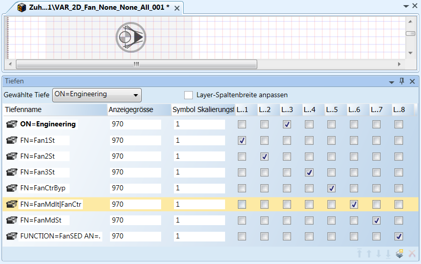